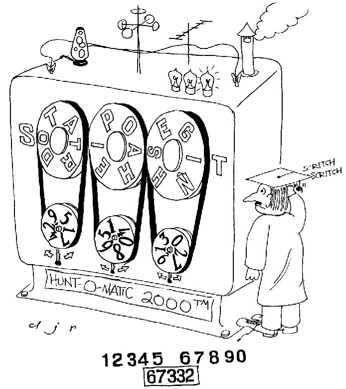

Dorothy and the Scarecrow stood in front of the mysterious contraption in the basement of Building 54. "How do you think it works?" asked Dorothy. "Beats me. I wonder who we can ask to find out."
"Beats me. I wonder who we can ask to find out."
